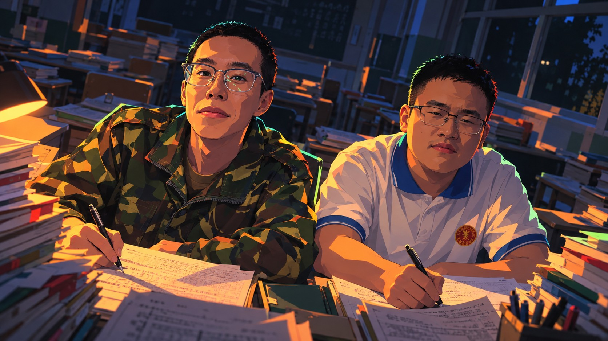

晚自习之后
最后一盏灯熄灭前，
你想留下答案，还是留下一个约定？
约 5–10 分钟 · 两位主角 · 三种结局
角色名为「东哥」（左）与「西坤」（右），均为虚构设定。
使用你提供的插画；故事不描述图片人物的真实经历。
AFTER SCHOOL

最后一盏灯熄灭前，
你想留下答案，还是留下一个约定？
约 5–10 分钟 · 两位主角 · 三种结局
角色名为「东哥」（左）与「西坤」（右），均为虚构设定。
使用你提供的插画；故事不描述图片人物的真实经历。